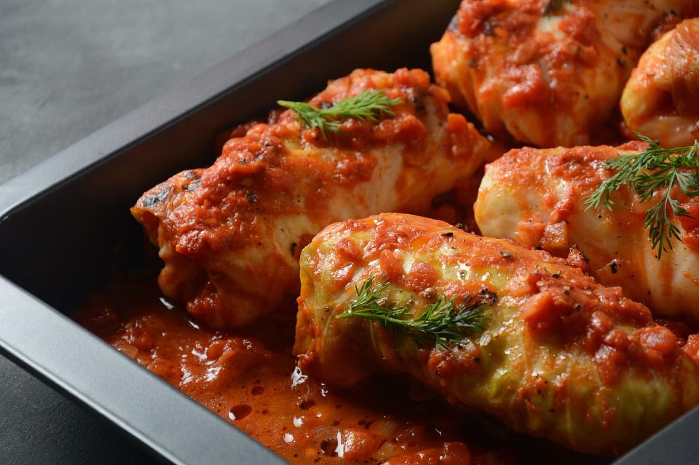

Holubtsi

Description
Holubtsi are one of the most popular Ukrainian meat-based dishes, typically consumed on festive occasions or
weekends. They are cabbage rolls stuffed with the mixture of cooked rice and minced meat (pork or beef).
However, the vegetarian option – with rice or buckwheat only – is the traditional choice on Christmas Eve and
during the Great Lent.
Ingredients:
- 1 (4,5 lb) head white cabbage
- 1 lb pork
- ½ lb chicken
- ½ lb beef
- 4 onions
- 1 (4 oz) cup rice
- ½ lb tomatoes
- 4 small carrots
- 8 oz sour cream
- 4 oz tomato paste
- 1-2 tbsp vegetable oil
- ground black pepper
- salt
Steps:
- Separate the cabbage leaves from the cob and scald the leaves in boiling salted water for 3-4 minutes.
- If the leaves are large, cut along the vein on both sides. Otherwise, just cut off the veins, but be careful
not to cut through the leaf.
- Set aside any damaged or small leaves. Line the pot bottom with the scalded cabbage leaves. If you have
enough, place them around the sides as well.
- Rinse the rice thoroughly in cold water and boil it until semi-ready (approx. 7-10 minutes).
- Mix the ground meat and rice together in a large bowl.
- Fry the onions until translucent. Set aside 1⁄2 for the sauce and use 1⁄2 for the filling.
- Grate and sauté the carrots with approximately 3 tbsp oil and 1 tbsp butter over a medium-to-high heat until
soft. These are added to the filling for their flavor.
- Mix the fried onions, carrots, and tomato paste together.
- Season the mixture with salt and pepper to taste.
- For small leaves: slice off the raised surface of the tough center stem just to flatten the leaf and make it
easier to roll.
- Fill each leaf with about 2 tbsp meat mixture.
- Place the filling over the stem/bottom portion. Roll like a burrito and tug both ends in with your fingers.
- For large leaves: cut the leaves in half down the center, removing the tough stem. You will end up with 2
leaves.
- Place 2 tbsp meat mixture at the top of each (or as much as you can fit).
- Roll the leaf into a cone shape with the thicker part of the leaf at the base and stuff the wide part into
the top.
- As you stuff your cabbage, arrange the rolls in the same pot you used to cook the cabbage.
- Place the cabbage rolls into the pot, wedging together tightly.
- Depending on the size and shape of the pot and the number of cabbage rolls, you may need to layer them.
- Mix the remaining carrots with the sliced tomatoes and cream.
- Pour the sauce over them. The sauce should percolate through and completely cover the cabbage rolls. If it
doesn’t, add a bit of water or tomato juice to make the sauce thinner.
- Cover the arranged rolls with the remaining cabbage leaves.
- Bake for 2-3 hours at 350 °F. Check on the level of the sauce from time to time. If it is getting low, add a
bit of water to keep the edges of the holubtsi from burning.
- When cooked, let sit for 15 minutes. Serve with a dollop of sour cream and dill or parsley.